Aktuality
Výstava v Karviné 15. a 16. listopadu
O víkendu 15. a 16. listopadu se zúčastníme výstavy železničních a dalších modelů. K vidění bude modulové kolejiště ve velikosti TT, modelové domečky, Rc modely nákladních aut a další. Nás zde uvidíte s Gčkovým kolejištěm.
Publikováno 30. 10. 2025
Výstava na Slezskoostravském hradě!
O víkendu 18. a 19. října se zúčastníme výstavy na Slezskoostravském hradě v Ostravě společně s Slezskými železničními modeláří a Železničními modeláři Karviná.
Budeme ude vystavovat kolejiště ve velikosti G a možná i něco navíc!
Publikováno 29. 9. 2025
Hledáme nové členy!
Baví tě železnice nebo modelaření, jsi zručný/á a kamarádský/á? Umíš pracovat v týmu a rád by ses účastnil/a zajímavých projektů? Možná hledáš právě nás!
Hledáme jakékoli zájemce od věku 12 let, ať už jsi teenager nebo dospělý! Zaujali jsme tě? Ozvi se nám a přijď se podívat do našeho kolektivu. Pokud máš jakékoli otázky, neboj se nás na ně zeptat!
Publikovano 9. 9. 2025
Letní akce na Osoblažsku
V červenci jsme se zúčastnili hned dvou akcí na Osoblažsku. 12. na Fajném létě v Osoblaze ve spolupráci s Osoblažskou úzkokolejkou a 26. akce Osoblažení v Horních Povelicích.
Na obou akcích jsme vystavovali cestovní kolejiště e velikosti H0 se třemi různými rozchody, kolejiště a vláčky ve velikosti G, lego kolejiště pro děti, výstražník AŽD 97 a část z odjezdové tabule Pragotron.
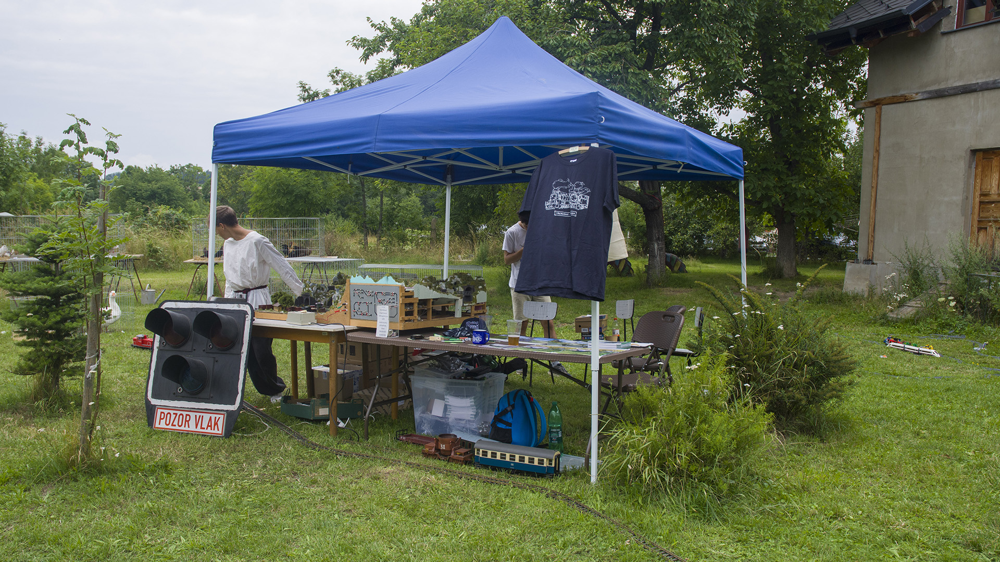
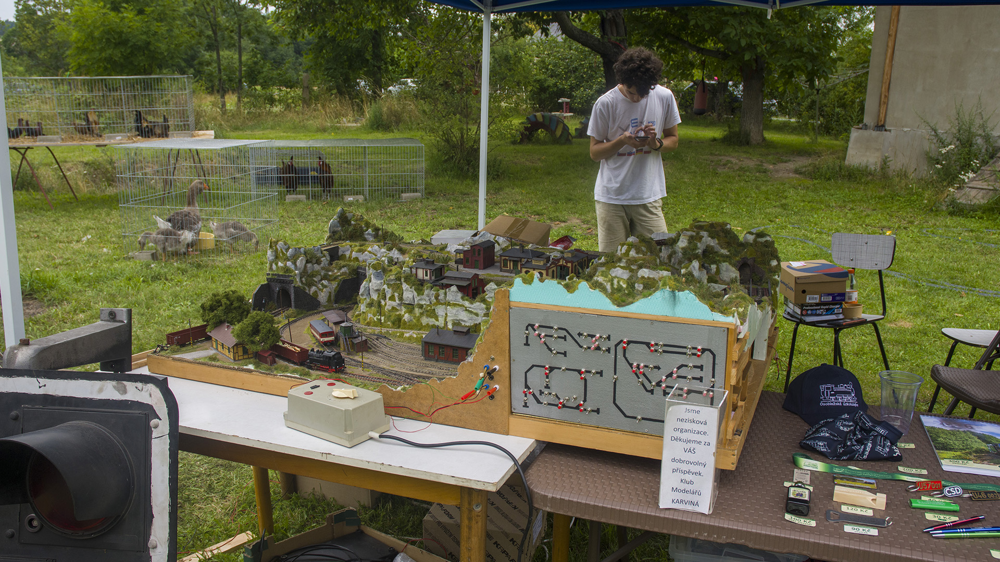
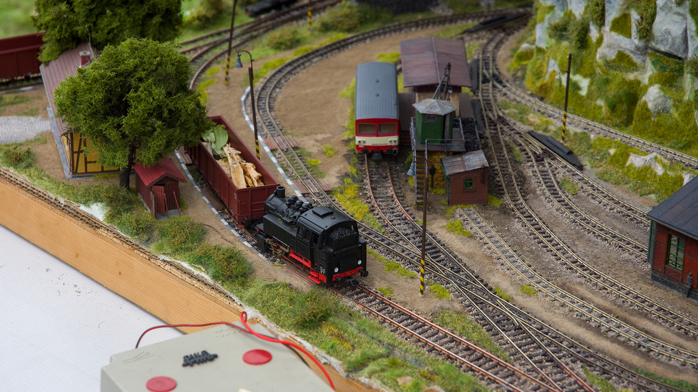
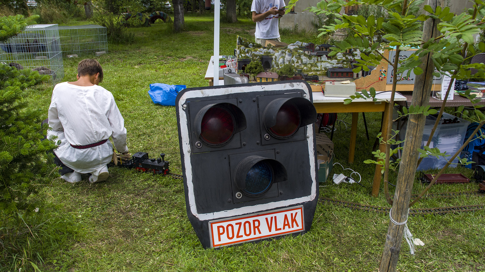
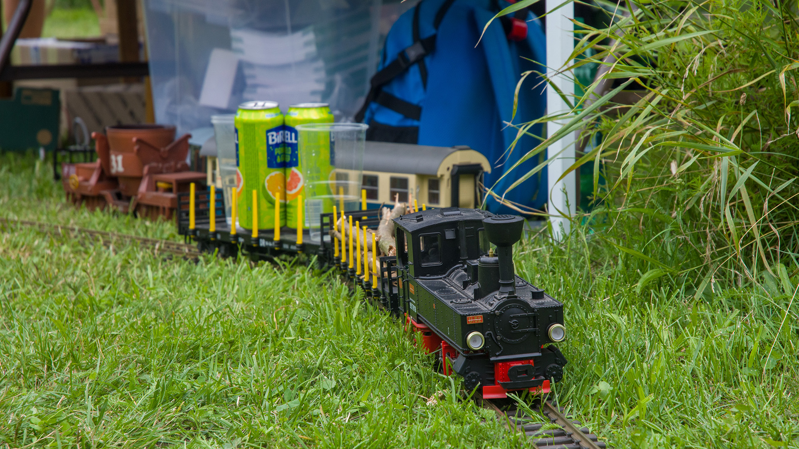
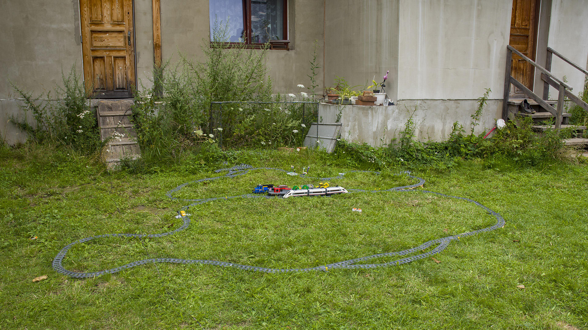
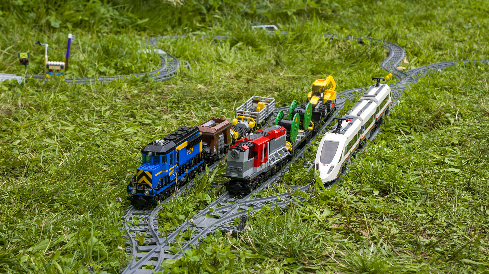
Publikovano 9. 9. 2025
Návštěva v lesní železnice v Rajnochovicích
Ve čtvrtek 8. května 2025 jsme se vydali na návštěvu ke "kolegům" na rozchodu 600mm do Rajnochovic. Návštěvu určitě doporučujeme všem příznivcům. Jelikož na důlním rozchodu teprve začínáme, byli jsme rádi za každou radu, kterou nám chlapi dali. Od rad se stavbou kolejí, až po údržbu lokomotiv. Prohlédli jsme si jejich veškeré zázemí, depo vozový park a také celou trať. Získali informace, co je nejlepší a nejdůležitější získat pro budoucí provoz. Všichni jsme měli možnost si vyzkoušet takovou lokomotivu vést, za což obrovské DÍKY!
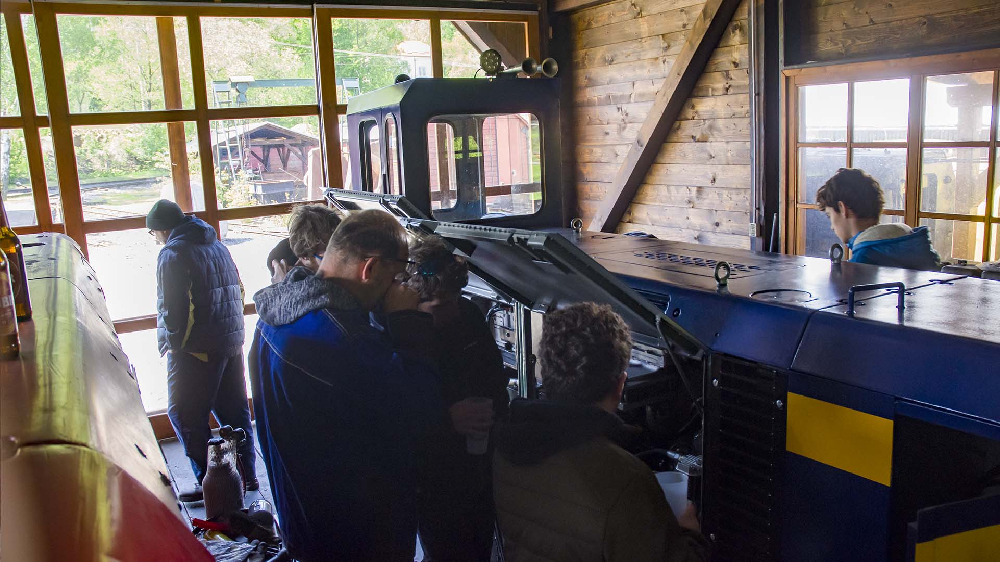
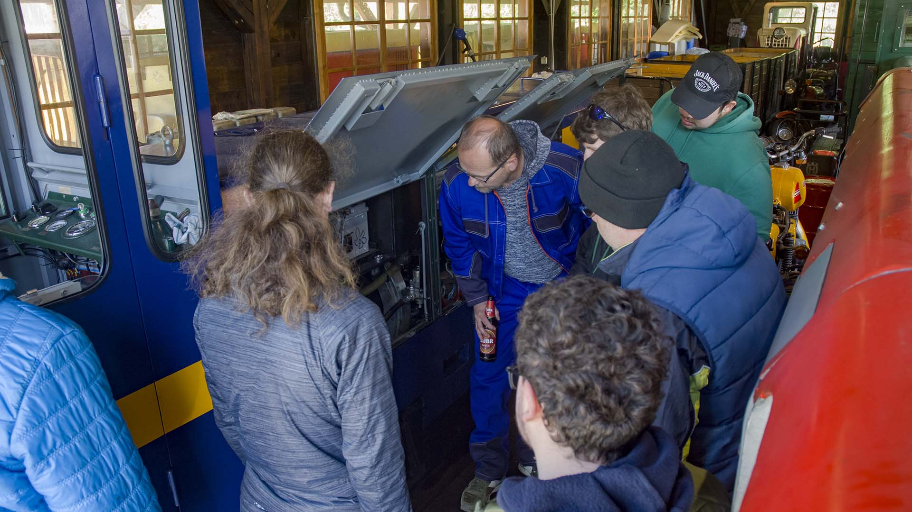
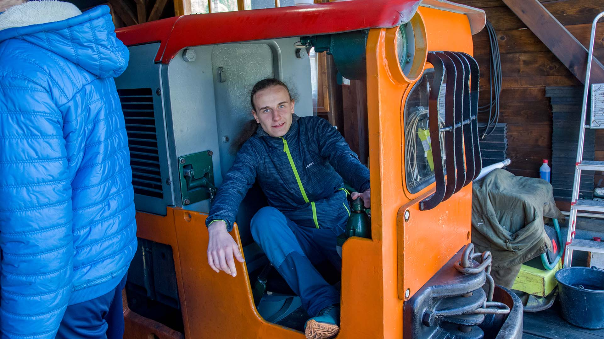
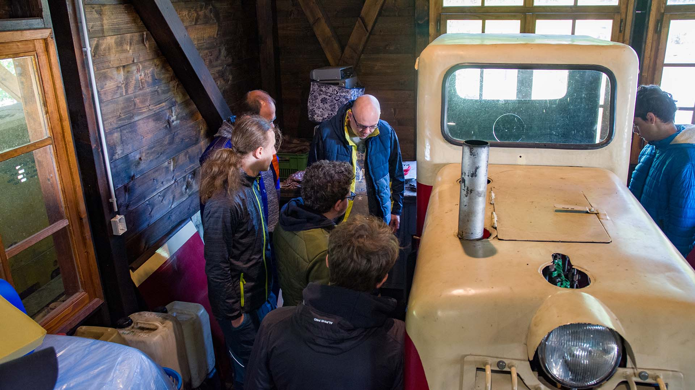
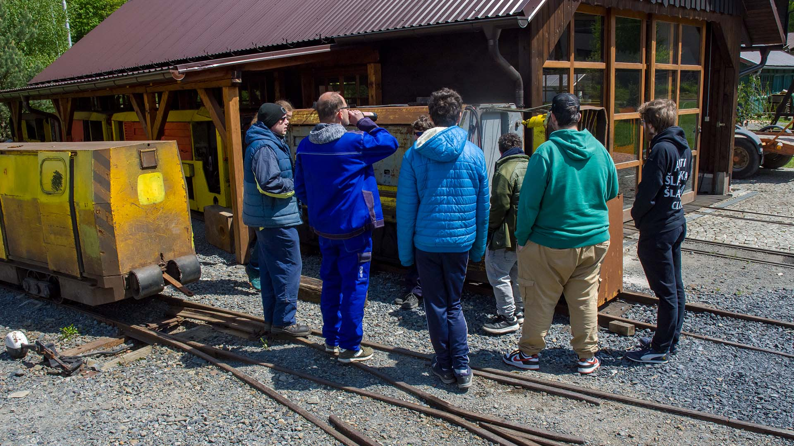
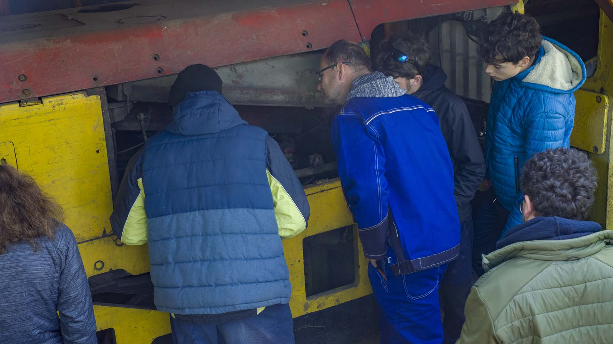
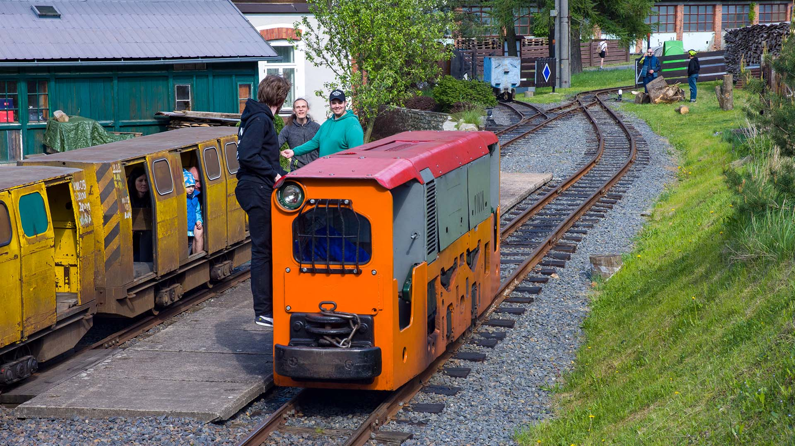
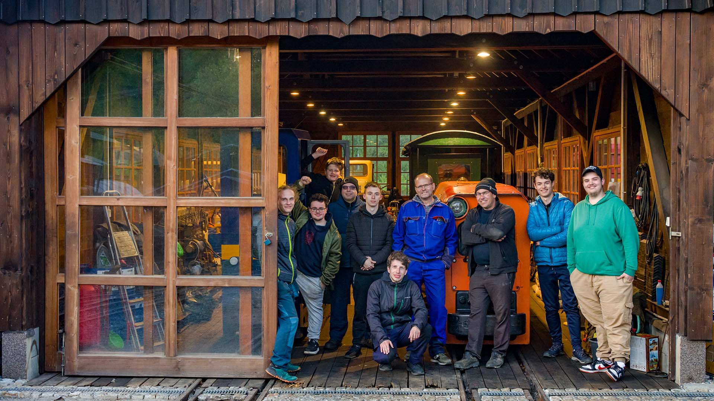
Publikovano 17. 8. 2025